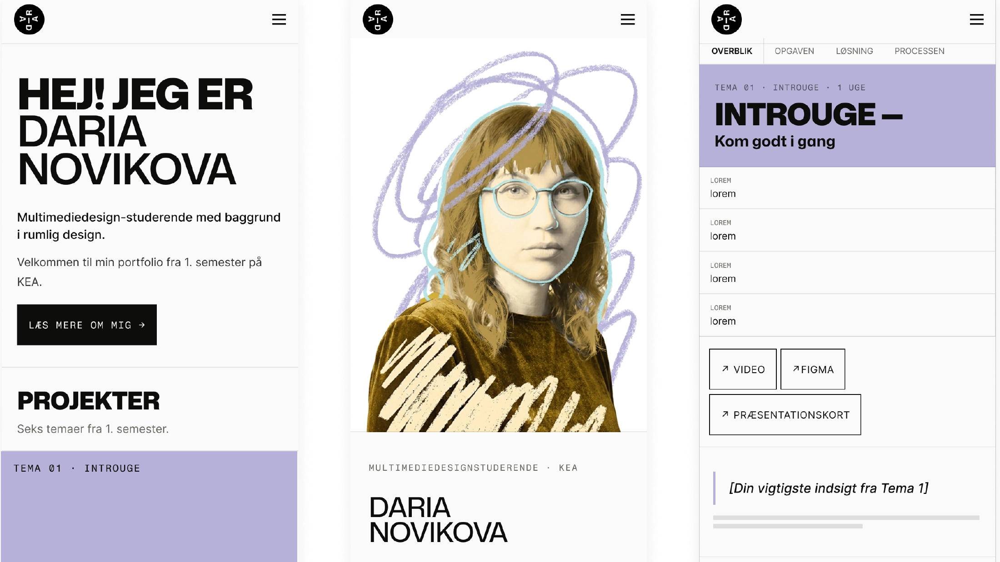

Portfolio-eksamen — Design og udvikling af dette portfoliowebsite
Et portfolio er ikke en oversigt over hvad du har lavet. Det er en oversigt over hvad du har tænkt. Det tog mig for lang tid at indse det.
Jeg har designet og udviklet sitet med HTML, CSS og JavaScript. Målet har været at samle mine seks temaer og præsentere både løsninger, proces og læring i ét samlet portfolio.
Et portfoliowebsite fra bunden
Opgaven bestod i at designe og udvikle et portfolio, der præsenterer mine projekter fra 1. semester.
- Forside med navigation til projekter og temaer
- Seks temasider med proces og refleksion
- Om mig-side med baggrund og erfaring
- Klart og hurtigt overblik for brugeren
- Responsivt website udviklet med HTML, CSS og JavaScript
Planlægning → design → kode
Jeg startede med fire moodboards i fire forskellige retninger — tone, typografi, farver og stemning. Valgte den retning der føltes rigtig, og byggede derfra et style tile der fastsatte palette, typografihierarki og visuelle principper. Først derefter gik jeg i gang med design og kode.
- Fire moodboards med forskellige visuelle retninger — én valgt som fundament
- Style tile med farvepalette, typografi og UI-principper
- Trello til planlægning af indhold og struktur
- Wireframes og layoutidéer i Figma
- Byggede designet med CSS custom properties
- Testede og optimerede med Lighthouse
- Validerede HTML og CSS
Jeg har brugt ChatGPT og Claude til sparring om struktur, formuleringer og JavaScript, som jeg efterfølgende selv har tilpasset og implementeret.

Dette portfoliowebsite
Sitet er udviklet med ren HTML, CSS og JavaScript med fokus på struktur, typografi og genkendelig navigation.
- Designsystem baseret på CSS custom properties
- Temasider med individuelle farveprofiler
- Responsivt layout med mobil-first tilgang
- Sidebar-navigation over 820px skærmbredde
- Semantisk HTML og tilgængelig struktur
Sider
8 (index, om-mig, T1–T6)
CSS
Modulært + tema-filer
JavaScript
Navigation og interaktion
Breakpoints
600px / 820px
Læring
Portfolioet er det projekt, hvor jeg tydeligst kan se afstanden mellem det jeg ville og det jeg nåede. Ikke fordi det er dårligt lavet — men fordi jeg ved præcist, hvad der mangler: mere bevidst og sammenhængende indhold på tværs af siderne. Tekster der sidder helt, billeder der er valgt frem for bare placeret.
Det tekniske kom relativt naturligt. Det der tog tid var at formulere seks temaer på en måde der afspejler, hvad der faktisk skete — ikke bare hvad opgaven hed.
- Et designsystem med CSS custom properties gør konsistens til et spørgsmål om struktur, ikke disciplin
- At skrive om eget arbejde er sværere end at lave det — det kræver distance man sjældent har under deadline
- AI-sparring om struktur og JavaScript var nyttigt, men alle valg krævede stadig at jeg forstod dem selv
Jeg brugte al min fritid på dette portfolio og endte alligevel med en brøkdel af det jeg havde forestillet mig. Det er ikke en fejl — det er designarbejdets grundvilkår. Næste semester starter jeg med det indhold.